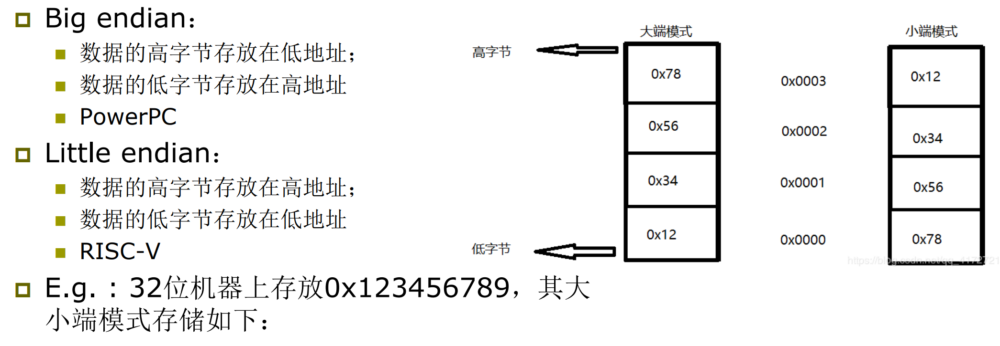
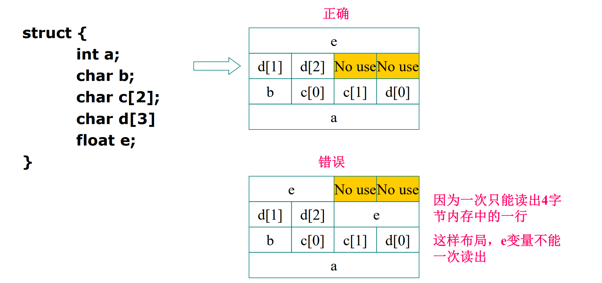
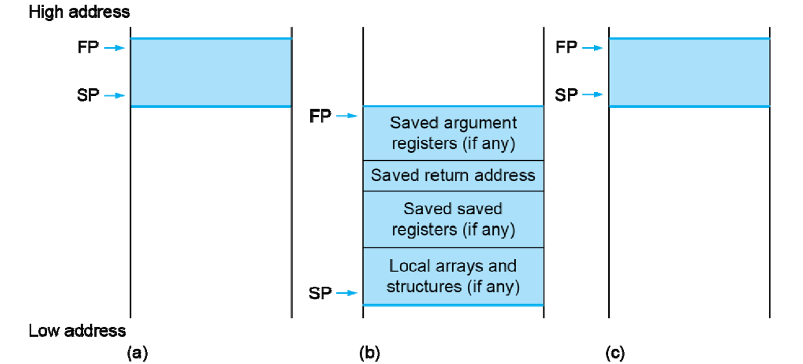
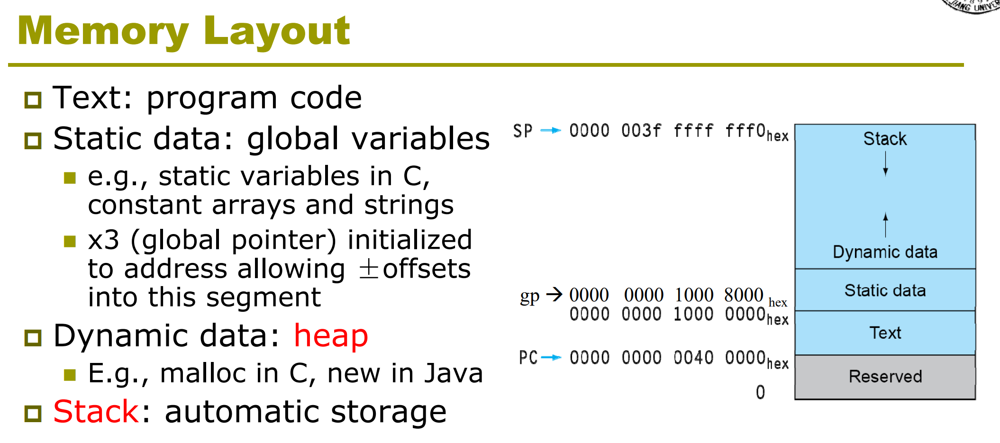
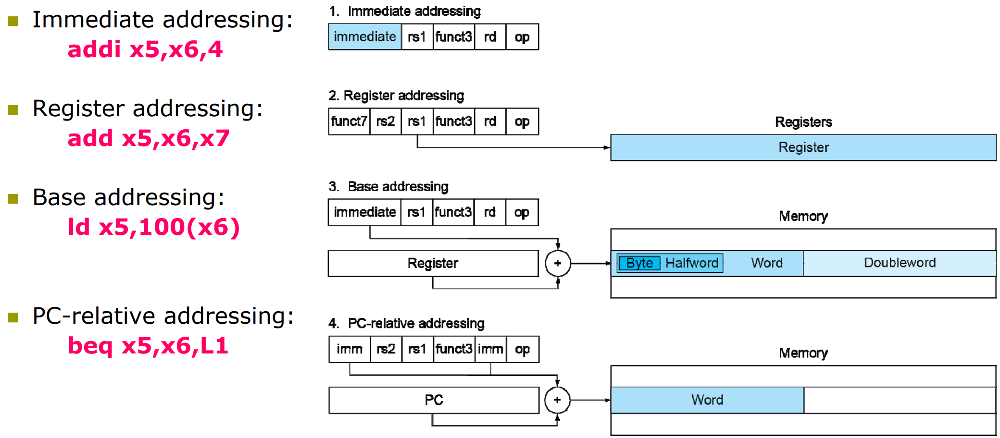
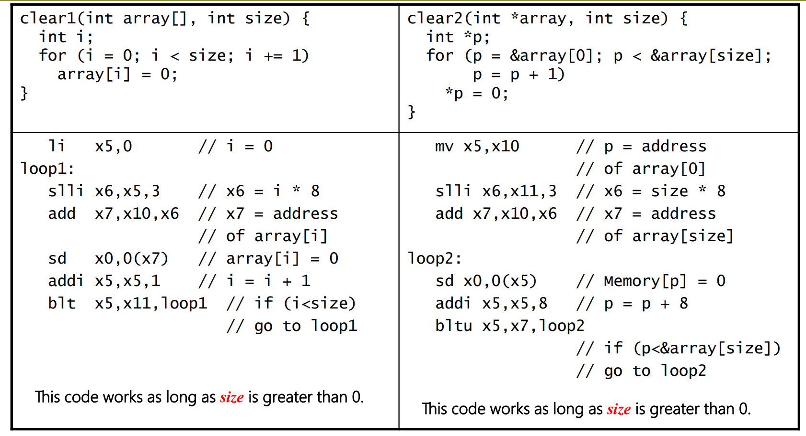

Chapter 2
2.1 Introduction
计算机的语言：指令和指令集
设计目标：最大化表现、最小化消耗、减少设计时间
我们选择的指令集：RISC-V
指令集决定：
- 指令怎样在内部存储
- 有多少 operand
- 指令集中的指令怎样执行
- 操作数的类型和大小
2.2 Operations of the Computer Hardware
每条指令一个运算，三个变量（a = b + c）
设计原理：简单源自规整，让所有运算都保持三个变量
将复杂的高级指令转换为只有三个操作数的汇编指令：
add t0, g, h // temporary variable t0 contains g + h
add t1, i, j // temporary variable t1 contains i + j
sub f, t0, t1 // f gets t0 – t1
2.3 Operands of the Computer Hardware
Register Operands（比 Memory 访问快）
- RISC-V 中 32 个 64 位（doubleword）寄存器
- 设计原理2：越少越快，不超过 32 个寄存器


Memory Operands
- 可以存储更多的数据以及成片的数据（数组等）
- 用 ld(load doubleword) 读取到寄存器、sd(save doubleword) 存储来自寄存器
- Memory is byte addressed：Each address identifies an 8-bit byte
- RISC-V 是小端，且不需要字对齐


- Memory 需要更多条指令
g = h + A[8] ; // A is an array of 100 doublewords
( Assume: g ---- x20 h ---- x21 base address of A ---- x22 )
g = h + A[i] ; // A is an array of 100 doublewords
( Assume: g, h, i -- x1, x2, x4 base address of A -- x3 )
add x5, x4, x4 # temp reg x5 = 2 * i
add x5, x5, x5 # temp reg x5 = 4 * i
add x5, x5, x5 # temp reg x5 = 8 * i
add x5, x5, x3 # x5 = address of A[i] (8 * i + x3)
ld $x6, 0(x5) # temp reg x6 = A[i]
add x1, x2, x6 # g = h + A[i]
Constant
获取方法:
- 提前存储在内存中，用 load 指令获得
- 放在指令中（小的数用的多，避免 load，make common case fast）
2.4 signed and unsigned numbers
2's 补码那些东西
2.5 Representing Instruncrions in the computer
设计原则 4：好的设计需要好的折衷，尽管有的指令不需要 32 bits，我们还是令其全为 32 bits
指令格式：

-
I 型指令：注意 imm 是 2's 表示，需要符号扩展到相应位数
-
高级指令->汇编指令->机器码
入侵更改程序
2.6 Logical Operations
移位、与、或、异或、非

- useful and：保留某些位，将其他位设为 0
- or：保留某些位，将其他位设为 1
2.7 Instruction for making decision
分支跳转
( Assume: f ~ j ---- x19 ~ x23 )bne x22, x23, ELSE // go to ELSE if i != j
add x19, x20, x21 // f = g + h ( skipped if i not equals j )
beq x0, x0, EXIT
ELSE: sub x19, x20, x21 // f = g - h ( skipped if i equals j )
EXIT:
循环
( Assume: i and k---- x22 and x24 base of save ---- x25 )
Loop: slli x10, x22, 3 // Temp reg x10 = i * 8
add x10, x10, x25 // x10 = address of save[i]
ld x9, 0(x10) // x9 gets save[i]
bne x9, x24, Exit // go to Exit if save[i] != k
addi x22, x22, 1 // i += 1
beq x0, x0, Loop // go to Loop
Exit:
其他的条件跳转（有符号数的比较）：
-
blt rs1, rs2, L1如果rs1<rs2，跳转到Lable L1处
-
bge rs1, rs2, L1如果rs1>=rs2，跳转到Lable L1处
也可以用 slt 指令进行跳转
-
slt x2, x3, x4set on less than——如果x3<x4，将x2设为1（2's 有符号数的比较）
slt x5, x6, x7 # x5 = 1 if x6 < x7 ( a < b)
bne x5, x0, Less # go to Less if x5 != 0 (that is, if a < b)
……
Less:
slt 也被用来产生 '1'
无符号数比较的指令：bltu, bgeu
bgeu x20, x11, Outbound
Case/Switch 语句
- 转换成汇编代码后，分支语句在memory中像数组一样连续存储
- 根据偏移量访问（jump address table）

switch ( k ) {
case 0 : f = i + j ; break ; /* k = 0 */
case 1 : f = g + h ; break ; /* k = 1 */
case 2 : f = g - h ; break ; /* k = 2 */
case 3 : f = i - j ; break ; /* k = 3 */
}
lt x25, x0, Exit // test if k < 0
bge x25, x5, Exit // if k >= 4, go to Exit
slli x7, x25, 3 // temp reg x7 = 8 * k
add x7, x7, x6 // x7 = address of JumpTable[k]
ld x7, 0(x7) // x7 gets JumpTable[k]
jalr x1, 0(x7) // jump entrance
Exit:

Basic blocks: 一段没有跳转的连续指令，可以被编译器优化
2.8 Supporting Procedures in Conputer Hardware
过程调用（函数）
step：
- Place Parameters in a place where the procedure can access them （in registers x10~x17）
- Transfer control to the procedure
- Acquire the storage resources needed for the procedure
- Perform the desired task
- Place the result value in a place where the calling program can access it
- Return control to the point of origin (address in x1)
jal x1, Lable - 跳转到 Lable，PC + 4 存到 x1
jalr x0, 0(x1) - jumps to 0 + address in x1
需要用更多的寄存器
-
过程调用中使用的寄存器：
- x10~x17：传递参数和返回结果的8个寄存器
- x1：记录return地址的寄存器
-
stack 是存储数据的理想地方
- Stack grow from higher address to lower address
- Push: sp= sp-8
- Pop: sp = sp+8
Leaf procedure：不会调用别的过程的过程
- 把要用的寄存器存到栈中，用完后再ld回来
long long int leaf_example (
long long int g, long long int h,
long long int i, long long int j) {
long long int f;
f = (g + h) - (i + j);
return f;
}
- Arguments g, …, j in x10, …, x13, f in x20
- temporaries x5, x6
- Need to save x5, x6, x20 on stack
leaf_example:
addi sp,sp,-24
sd x5,16(sp)
sd x6,8(sp)
sd x20,0(sp)// Save x5, x6, x20 on stack
add x5,x10,x11// x5 = g + h
add x6,x12,x1// x6 = i + j
sub x20,x5,x6// f = x5 – x6
addi x10,x20,0// copy f to return register
ld x20,0(sp)
ld x6,8(sp)
ld x5,16(sp)// Resore x5, x6, x20 from stack
addi sp,sp,24
jalr x0,0(x1)// Return to caller
- x5-x7，x28-x31：temporary register（随便用）
- x8-x9，x18-x27：saved register（需要压栈）
Non-leaf procedure
- return的地址会改变
- 因此需要把返回地址 x1 压栈
- 以及存储结果的寄存器也要压栈
递归求阶乘为例
long long fact ( long long n )
{
if ( n < 1 ) return ( 1 ) ;
else return ( n * fact ( n - 1 ) ) ;
}
argument n is in x10, and results in x10
fact: addi sp, sp, 16 // adjust stack for 2 items
sd x1, 8(sp) // save the return address
sd x10, 0(sp) // save the argument n
addi x5, x10, -1 // x5 = n - 1
bge x5, x0, L1 // if n >= 1, go to L1(else)
addi x10, x0, 1 // return 1 if n <1
addi sp, sp, 16 // Recover sp (Why not recover x1and x10 ?)
jalr x0, 0(x1) // return to caller
L1: addi x10, x10, -1 // n >= 1: argument gets ( n - 1 )
jal x1, fact // call fact with ( n - 1 )
add x6, x10, x0
ld x10, 0(sp) // restore argument n
ld x1, 8(sp) // restore the return address
addi sp, sp, 16 // adjust stack pointer to pop 2 items
mul x10, x10, x6 // return n*fact ( n - 1 )
jalr x0, 0(x1) // return to the caller
递归的坏处：消耗大量资源保护寄存器的值、需要大量内存空间（压栈），loop可以解决（特别是尾递归）
总结（是否需要保留）

- Procedure frame and frame pointer ( x8 or fp ) - 保存 C 中的自动变量
- Global pointer ( x3 or gp ) - 保存 C 中的静态变量


2.9 communication with people
字符的表示方法:
- ascii码（128个字符）
- unicode（16-bit/32-bit）
load和store指令
- Load byte/halfword/word: Sign extend to 64 bits in rd
- lb rd, offset(rs1)
- lh rd, offset(rs1)
- lw rd, offset(rs1)
- Load byte/halfword/word unsigned: Zero extend to 64 bits in rd
- lbu rd, offset(rs1)...
- Store byte/halfword/word: Store rightmost 8/16/32 bit
- sb rs2, offset(rs1)
- sh rs2, offset(rs1)
- sw rs2, offset(rs1)
字符串的表示方法
- Place the length of the string in the first position(JAVA)
- An accompanying variable has the length
- A character in the last position to mark the end of a string(C)
拷贝字符串的例子
void strcpy ( char x[ ] , char y[ ] )
{
size_t i ;
i = 0 ;
while ( ( x[ i ] = y[ i ] ) != ‘\ 0’ ) /* copy and test byte */
i += 1 ;
}
( Assume: i -- x19， x’s base --x10, y’s base ----x11)
strcpy: addi sp, sp, -8 // adjust stack for 1 doubleword
sd x19, 0(sp) // save x19
add x19, x0, x0 // i = 0
L1: add x5, x19, x11 // address of y[ i ] in x5
lbu x6, 0(x5) // x6 = y [ i ]
add x7, x19, x10 // address of x[ i ] in x7
sb x6, 0(x7) // x[ i ] = y[ i ]
beq x6, x0, L2 // if y[ i ] == 0, go to L2
addi x19, x19, 1 // i = i + 1
jal x0, L1 // go to L1
L2: ld x19, 0(sp) // restore x19
addi sp, sp, 8 // pop 1 doubleword off stack
jalr x0, 0(x1) // return
优化：叶子程序先使用不需要 save 的 temp 寄存器，再使用必须 save 的
2.10 Addressing for Wide Immediate and Addresses
lui rd, constant - U型指令（前20位是立即数，接下来5位是目的寄存器，最后是操作符）
将立即数存在目的寄存器中，后面补零
如果我们想要 li b0000 0000 0011 1101 0000 1001 0000 0000
必须分两步：lui 0000 0000 0011 1101 0000 addi 1001 0000 0000（寄存器略）
寄存器的高32位会进行符号扩充
Branch Addressing
bne x10, x11, 2000 - SB型指令（2000 - 跳转偏移量）

- 立即数末尾补零（相当于乘二）
跳转范围：\(\pm 2^{12}\)个byte，即\(\pm 4\)k个字节
Jump Addressing
无条件跳转
jal x0, 2000 - j型指令（只有这一条）

跳转范围\(\pm 1\)M字节
- For long jumps, eg, to 32-bit absolute address
- lui: load address[31:12] to temp register
- jalr: add address[11:0] and jump to target
寻址Summary

2.11 Parallelism and Instructions: Synchronization
在load和save时，可能有并行的程序导致地址不可用，操作失败，因此加入判断
- Load reserved:
lr.d rd,(rs1)- 把 rs1 地址里的值存在 rd 中
- 保持地址存放的东西不变
- Store conditional:
sc.d rd,(rs1),rs2- 把 rs2 的值存在 rs1 中的地址里
- 成功时（location 没变）返回0
- 失败时返回非零值
Example 1: atomic swap(to test/set lock variable)
again: lr.d x10,(x20)
sc.d x11,(x20),x23 // X11 = status
bne x11,x0,again // branch if store failed
addi x23,x10,0 // X23 = loaded value
Example 2: lock
Unlock: sd x0,0(x20) // free lock
其他指令
aulpc
M: integer multiply, divide, remainder
- A: atomic memory operations
- F: single-precision floating point
- D: double-precision floating point
- C: compressed instructions
2.12 Translating and Starting a Program

object file 和 executable file
-
静态链接：将库文件整个copy，不实时更新
-
动态链接（Dynamic Linking）
-
Lazy Linkage:
-
Java application
2.13 C Example
调用子函数：将需要保持的寄存器存起来
- 存到栈中
- 存到另一寄存器——效率更高
约定：
- 父函数保证：子函数能随便使用temporary registers (x5-x7, x28-x31)，返回给父函数的时候，x5-x7, x28-x31的值可以被改变。
- 子函数保证：返回给父函数的时候，saved registers(x18-x27) 保持父函数调用子函数前的值。
编译器的优化效果
效果与算法有关
算法很重要
上节课：b、j、u型指令
Leaf - temperor register
Father - saved register
访问数组的两个方式
- 索引 -
array[i] - 指针 -
*p = array[0]，通过*p访问

- 数组大时，后者好（前者需要 i 乘 size）
- 大小为 0 时，会无限循环（需要判断）
实际上在编译器的优化下无区别
2.14 Real Stuff: MIPS & x86
MIPS 和 Risc-5 的相似点：
- 指令 32 位
- 32 个目的寄存器，32个浮点寄存器
- 内存只能用 load/save 访问
不同点：
- 分支跳转不同 MIPS 只用 slt、sltu，再用 beq、bne

上图 MIPS 中，Rs2 是目的寄存器（ld 存数据到 Rs2 中，st 把 Rs2 中的数据存到内存中）
X86：多年改进得到，兼容
以 386 为例
- 每条指令有两个操作符,可以在一条指令读取、计算、存回
- 多种寻址模式
- 指令有长有短